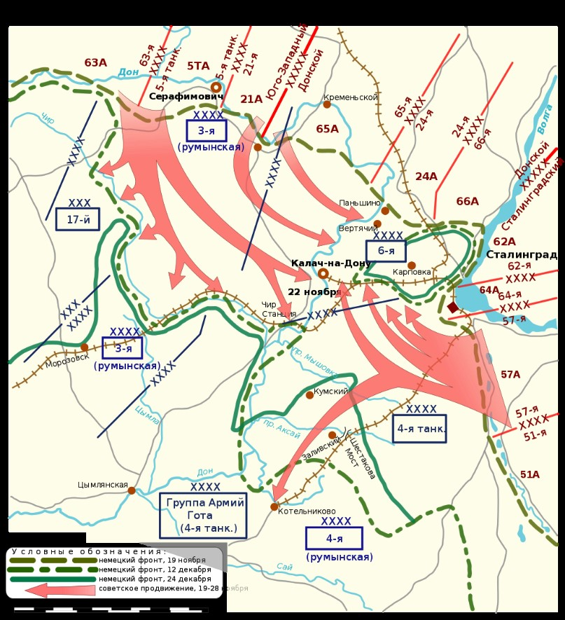
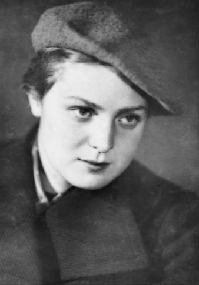

19-23 ноября 1942 года
Источник. История земли Волгоградской А.С. Скрипкин А.В., Луночкин, И.И. Курилла, с. 174.
Событие. Операции «Уран» - контрнаступление советских войск под Сталинградом.
В сентябре 1942 года, в период ожесточенных боев в городе, началась разработка плана контрнаступления, получившее кодовое название операция «Уран». Руководили разработкой операции генерал армии Г.К. Жуков, генерал-полковник А.М. Василевский при участии представителей Ставки Верховного главнокомандования, Генерального штаба, командования видов Вооруженных сил и родов войск, а также военных советов фронтов.
Замыслом операции предусматривалось: нанести удары с плацдармов на реке Дон в районах Серафимовича и Клетской и из района Сарпинских озер, южнее Сталинграда; разгромить войска, прикрывавшие фланги ударной группировки противника; развивая наступление по сходящимся направлениям на г. Калач-на-Дону, х. Советский, окружить и уничтожить главные силы немецко-фашистских войск непосредственно под Сталинградом.
План разрабатывался в обстановке строгой секретности. Привлекался определенный круг лиц и только в части, их касающейся. Запрещалось вести какие-либо переговоры по средствам связи, задачи ставились только при личном общении. Были приняты всесторонние меры, чтобы скрыть сосредоточение и развертывание привлекавшихся к контрнаступлению войск, осуществлен комплекс мер по дезинформации противника. Все это позволило сохранить в тайне от немецкого командования не только время и место нанесения ударов советскими войсками, но и сам факт подготовки наступательной операции.
Контрнаступление началось 19 ноября 1942 года ударами войск Юго-Западного и 65-й армии Донского фронта. Атаке пехоты и танков предшествовала артиллерийская подготовка. К исходу дня войска Юго-Западного фронта продвинулись на 25-35 км. Войска Сталинградского фронта перешли в наступление 20 ноября, в первый же день прорвали оборону противника и обеспечили ввод в прорыв танковых и механизированных корпусов. Действуя в оперативной глубине, танковые и механизированные соединения двух фронтов продвигались навстречу друг другу в направлении на г. Калач-на-Дону, х. Советский. Одновременно кавалерийские и стрелковые подразделения, развивая наступления в юго-западном и южном направлениях, создавали внешний фронт окружения всей группировки противника, действовавшей на Сталинградском направлении. 23 ноября подвижные соединения Юго-Западного и Сталинградского фронтов соединились в районе Калач-на-Дону, Советский, Мариновка, завершив тем самым операцию «Уран».
Источник: «Победа» от 2 февраля 2013 года.
Карта

Источник. «Волгоградская правда» от 2 февраля 2013.
Отрывок из мемуаров Г.К. Жукова «Воспоминания и размышления» Как разрабатывался план операции «Уран» (том 2 стр. 302).
«Верховный достал карту с расположением резервов Ставки, долго и пристально рассматривал. Мы с Александром Михайловичем Василевским отошли подальше от стола в сторону и очень тихо говорили о том, что видимо, надо искать какое-то иное решение.
- А какое «иное» решение? Вдруг, подняв голову спросил И.В. Сталин.
Я никогда не думал, что у И.В. Сталина такой острый слух. Мы подошли к столу.
- Вот что, - продолжал он, - приезжайте в Генштаб и подумайте хорошенько, что надо предпринять в районе Сталинграда. Откуда и какие войска можно перебросить для усиления сталинградской группировки. Завтра в 9 часов вечера снова соберемся.»
На следующий день вечером Г.К. Жуков и А.М. Василевский были у И.В. Сталина. Г.К. Жуков доложил о своих соображениях по окружению и уничтожению врага. И.В. Сталин одобрил доклад Г.К. Жукова, хотя это была пока идея. Потом план был разработан досконально и получил кодовое название «Уран» и, конечно, держался в особом секрете. Вплоть до конкретной реализации.
Утром следующего дня Г.К. Жуков и А.М. Василевский вылетели в Сталинград, на месте уточняли детали плана. А в Сталинграде обстановка ухудшалась с каждым днем. Город горел и разрушался, люди погибали – и военные, и гражданские. Бои шли на улицах города. Вокзал Сталинград – 1 и Мамаев курган неоднократно переходили из рук в руки. В ноябре Г.К. Жуков и А.М. Василевский провели секретные военные советы на севере и на юге с участием командующих фронтами и армиями. На них окончательно утверждался план «Уран».
Источник. История земли Волгоградской А.С. Скрипкин А.В., Луночкин, И.И. Курилла, с. 176.
Подвиг

23 ноября вовремя ожесточенной схватки за высоту 56,8 около хутора Паньшино санинструктор 214-й стрелковой дивизии Гуля Королева с группой бойцов пошла в атаку. Под огнем противника она первой ворвалась во вражеские окопы и уничтожила 15 солдат и офицеров противника. Несмотря на тяжелое ранение, оказавшееся смертельным, Гуля продолжала огнем своего автомата уничтожать немецких солдат до тех пор, пока оружие не выпало из рук. В результате этого подвига противник был выбит из окопов, в которых закрепились подоспевшие советские бойцы.